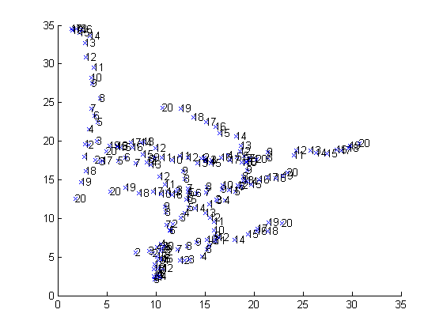
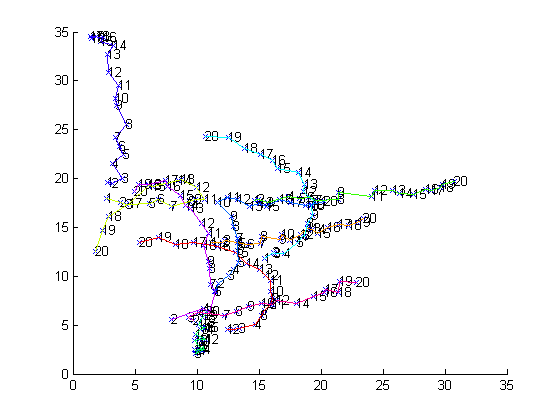

Test script for the Simple Tracker function
This script aims at demonstrating the capabilities and the syntax of simpletracker.m, a MATLAB function dedicated to tracking.
Tracking , or particle linking, consist in re-building the trajectories of one or several particles as they move along time. Their position is reported at each frame, but their identiy is yet unknown: we do not know what particle in one frame corresponding to a particle in the previous frame. Tracking algorithms aim at providing a solution for this problem.
simpletracker.m is - as the name says - a simple implementation of a tracking algorithm, that can deal with gaps. A gap happens when one particle that was detected in one frame is not detected in the subsequent one. If not dealt with, this generates a track break, or a gap, in the frame where the particule disappear, and a false new track in the frame where it re-appear.
simpletracker first do a frame-to-frame linking step, where links are first created between each frame pair, using the hungarian algorithm of hungarianlinker. Then a second iteration is done through the data, investigating track ends. If a track beginning is found close to a track end in a subsequent track, a link spanning multiple frame can be created, bridging the gap and restoring the track.
This scripts generate random points that more or less follow a given trajectories. They are scrambled, their position is perturbed by noise, and some of them are randomly erased in some frames. This is the first and longer part in the script
In a second time, the tracker tries to rebuild the tracks. This is made just by calling simpletracker with sensible parameters.
The third part is only about displaying results. The points are drawn with a text label next to them indicating to which frame they belong. Track are drawn in color.
More information can be found in the help section of the simpletracker and of the functions it calls, namely hungarianlinker and nearestneighborlinker.
Contents
Problem parameters
% Dimensionality of the simulated problem (2 for 2D, 3 for 3D) n_dim = 2; % Number of rames to track the points over n_frames = 20; % Aproximative number of points per frame n_points_per_frame = 10;
Create the random points
points = cell(n_frames, 1); % Random start position start = 20 * rand(n_points_per_frame, n_dim); % Span initial direction theta = linspace(0, 2* pi/4, n_points_per_frame)'; vec = [ cos(theta) sin(theta) ]; % Random direction change theta_increase = pi / n_frames * rand(n_points_per_frame, 1); for i_frame = 1 : n_frames % Disperse points as if their position was increasing by 1.5 in average % each frame. frame_points = start + vec .* i_frame .* [cos(theta_increase * i_frame) sin(theta_increase * i_frame) ] + rand(n_points_per_frame, n_dim) ; % Randomize them; randomizer = rand(n_points_per_frame, 1); [ sorted index ] = sort(randomizer); frame_points = frame_points(index, :); % Delete some of them, possible deleter = randn; while (deleter > 0); frame_points(1, :) = []; deleter = deleter - 1; end points{i_frame} = frame_points; end
Plot the random points
We plot a 'x' at each point location, and an index of the frame they are in next to the mark.
figure(1) clf hold on for i_frame = 1 : n_frames str = num2str(i_frame); for j_point = 1 : size(points{i_frame}, 1) pos = points{i_frame}(j_point, :); plot(pos(1), pos(2), 'x') text('Position', pos, 'String', str) end end
Track them
Finally! A one liner. We add some information to the output, and allow gap closing to happen all the way through.
max_linking_distance = 4; max_gap_closing = Inf; debug = true; [ tracks adjacency_tracks ] = simpletracker(points,... 'MaxLinkingDistance', max_linking_distance, ... 'MaxGapClosing', max_gap_closing, ... 'Debug', debug);
Frame to frame linking using Hungarian method. 019/019 Creating 172 links over a total of 189 points. Done. Gap-closing: Creating a link between point 3 of frame 2 and point 7 of frame 4. Creating a link between point 9 of frame 3 and point 5 of frame 5. Creating a link between point 2 of frame 4 and point 5 of frame 7. Creating a link between point 5 of frame 8 and point 1 of frame 10. Creating a link between point 2 of frame 9 and point 3 of frame 11. Creating a link between point 5 of frame 9 and point 8 of frame 11. Creating a link between point 9 of frame 12 and point 4 of frame 14. Done. Building tracks:
Plot tracks
We want to plot eahc track in a given color. Normally we would have to retrieve the points coordinates in the given points initiall cell arrat, for each point in frame. To skip this, we simple use the adjacency_tracks, that can pick points directly in the concatenated points array all_points.
n_tracks = numel(tracks);
colors = hsv(n_tracks);
all_points = vertcat(points{:});
for i_track = 1 : n_tracks
% We use the adjacency tracks to retrieve the points coordinates. It
% saves us a loop.
track = adjacency_tracks{i_track};
track_points = all_points(track, :);
plot(track_points(:,1), track_points(:, 2), 'Color', colors(i_track, :))
end
 Jean-Yves Tinevez jeanyves.tinevez@gmail.com November 2011 - May 2012